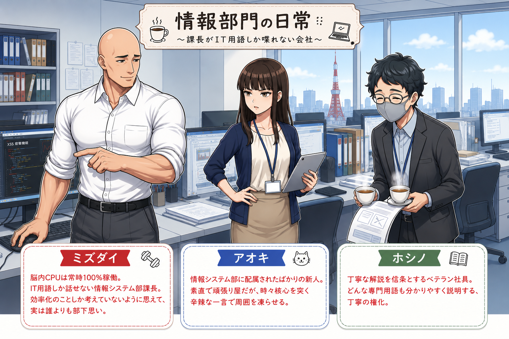

今日から情報部門へ配属されたアオキ。 パソコンに詳しい人たちが静かに働いている部署。 そんなイメージを抱いていた。 だが、その幻想は扉を開いた瞬間に粉砕される・・・
課長のデスクは、なぜか学校の児童用机並みに小さい。 そこには、尋常ではない量の書類がタワーのように積み上がっている・・・
本作品は、 情報処理安全確保支援士（SC）で学ぶ内容を ストーリー形式で楽しく学べるようにした 学習コンテンツです。